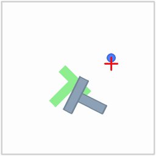
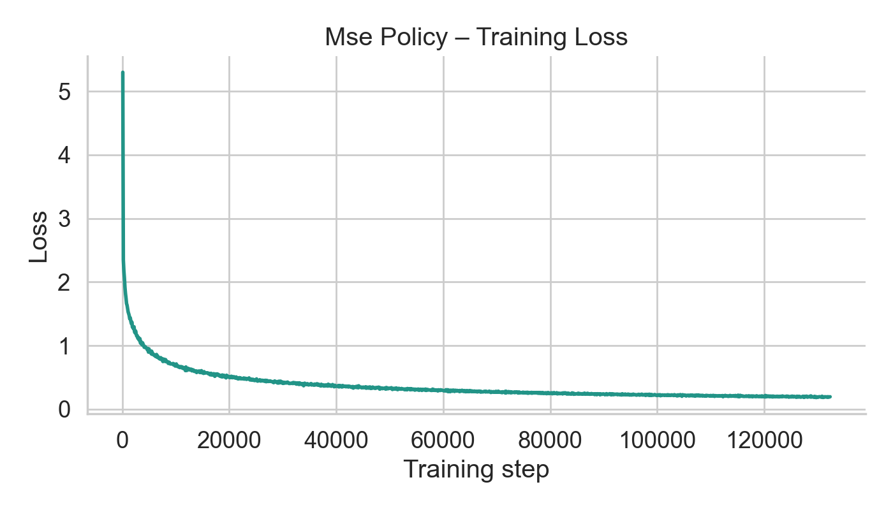
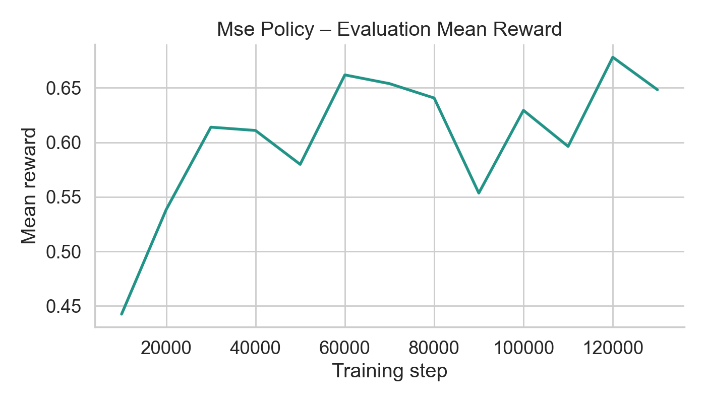
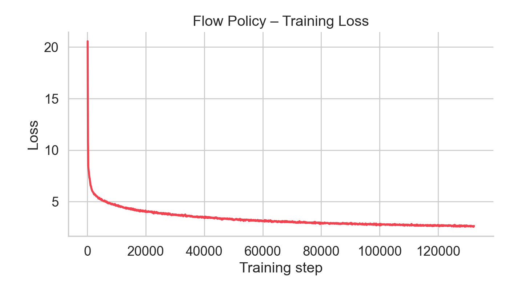
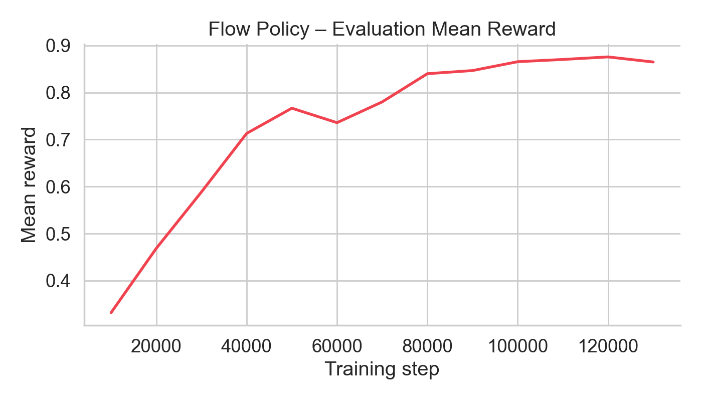
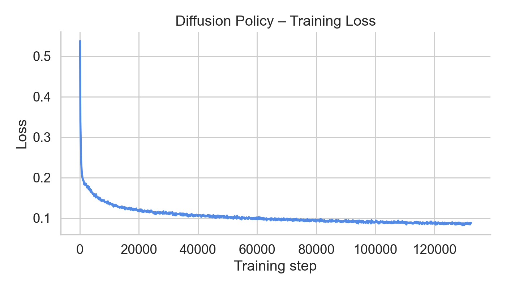
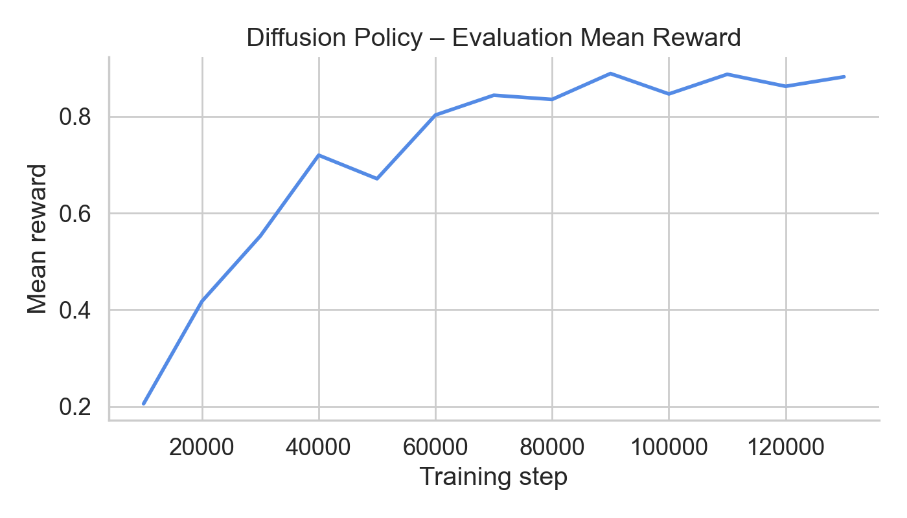
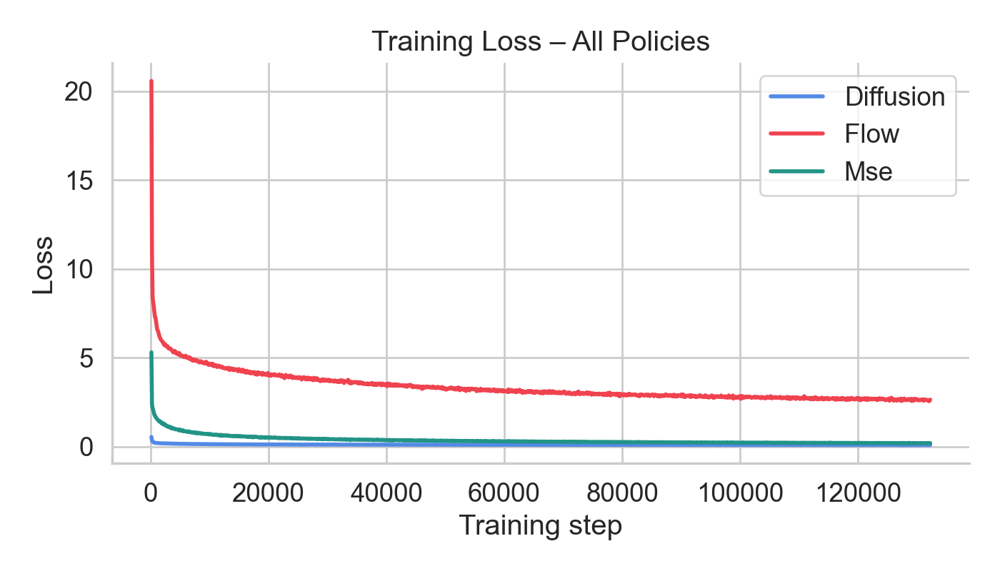
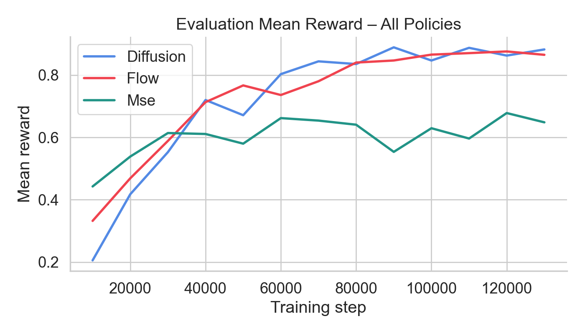

Imitation Learning for Push-T
Overview
This project explores three different policies for the Push-T manipulation task. These policies are trained to predicts chunks of future actions to push the T-block into the target zone.

Push-T Environment
The observation of the Push-T environment is a 5-dimensional state describing the position of the T-block and the agent: \(o_t = [x_t, y_t, x_a, y_a, \theta]\), where \( (x_t, y_t) \) are the coordinates of the T-block, \( (x_a, y_a) \) are the coordinates of the agent, and \(\theta\) is the angle of the T-block. The action is a 2-dimensional vector representing the target position of the agent: \( (x_a, y_a) \). The goal is to push the T into the goal zone.
Push-T Dataset
Action Chunking
In this project, I use action chunking to improve the performance of the policy by predicting a short horizon of actions at once. At time \( t \), the policy \( \pi_\theta(A_t | o_t) \) maps the current observation \( o_t \) to an action chunk \( A_t \) = \( (a_t,a_{t+1},...,a_{t+K-1}) \) for some fixed chunk length \( K \). The chunk is executed open-loop: the environment receives \( a_t \) at time \( t \), then \( a_{t+1} \) at time \( t+1 \), and so on until \( a_{t+K-1} \). After the chunk finishes, the policy is queried again on the latest observation \( o_{t+K} \) to produce the next chunk.
MSE Policy
The MSEPolicy is the simplest policy that learns to predict a chunk of actions using the mean squared error (MSE) loss.
Given a dataset of paired observations and expert chunks \( (o_t, A_t) \), we fit \( \pi_\theta \) by minimizing the following loss
\( \mathcal{L}_{\text{MSE}} = \frac{1}{B}\sum_{j=1}^B \left\| A_t^{(j)} - \pi_\theta(o_t^{(j)}) \right\|_2^2 \)
Implementation
- I use a simple MLP with ReLU activations functions to output the predicted action chunks.
- My implementatin uses three hidden layers:
(128, 128, 128) - The input is the state with shape
(B, state_dim)and the output is the predicted action chunks with shape(B, chunk_size, action_dim).
Intuition and Motivation
This is the simplest and strongest baseline for imitation learning. If the dataset covers the task well, direct regression can learn a usable policy quickly with stable optimization and fast inference (single forward pass). It also gives a clean reference point before implementing more complex policies like flow matching and diffusion.

MSE Policy – Training Loss

MSE Policy – Evaluation Mean Reward
MSE Policy – Rollout 1
MSE Policy – Rollout 2
Flow Matching Policy
MSE policies predict chunks in one shot, which can struggle to model complex, multimodal chunk distributions. Flow matching addresses this by learning a conditional vector field that transports noise into realistic action chunks. In other words, flow matching learns a velocity function that tells us how to move from a noisy action chunk to an expert action chunk at any given time \( \tau \in [0,1] \).
Flow Matching Loss
Like diffusion, the goal of flow matching is to learn a function that transforms noise into a realistic action chunk. This means we start with a randomly generated noisy action chunk \( A_{t, 0} \sim \mathcal{N}(0, I) \) and want to end up with a clean, expert-like action chunk \( A_{t, 1} \).
Instead of trying to one shot predict the expert action chunk, we define a continuous path between the noisy and expert action chunks. To do this, we first sample a random "flow matching timestep" \( \tau \sim \mathcal{U}(0, 1) \). Then, we linearly interpolate between the noisy and expert action chunks using the flow matching timestep: $$ A_{t, \tau} = (1 - \tau) A_{t, 0} + \tau A_{t, 1} $$ Now, we have a continuous path between the noisy and expert action chunks!
Going with the flow
Now we can train a Velocity Network \( v_{\theta} (o_t, A_{t, \tau}, \tau) \) to predict the velocity of movement along the path between the noisy and expert action chunks: \( v_{t, \tau} \)
The true velocity of the path can be calcluated by differentiating the interpolation equation with respect to \( \tau \):
$$
v_{t, \tau} = \frac{d}{d\tau} A_{t, \tau} = A_{t, 1} - A_{t, 0}
$$
With both the predicted velocity and the true velocity, we can use the following loss to train the Velocity Network:
$$
\mathcal{L}_{\text{flow}} = \frac{1}{B}\sum_{j=1}^B \left\|v_\theta(o_t^{(j)}, A_{t, \tau}^{(j)}, \tau^{(j)}) - v_{t, \tau}^{(j)}\right\|_2^2
$$
With this loss, the velocity network will learn to predict the direction of movement at any flow matching timestep \( \tau \).
Flow Matching Inference
At inference time, we start by sampling a random noisy action chunk \( A_0 \sim \mathcal{N}(0, I) \). Then, leveraging the trained velocity network, we can iteratively denoise the action chunk to get a cleaner, expert-like action chunk. To get the desired state using the velocity network, we need to solve the ODE: $$ \frac{dA_{t, \tau}}{d\tau} = v_{\theta}(o_t, A_{t, \tau}, \tau) $$ Solving this, we get: $$ dA_{t, \tau} = v_{\theta}(o_t, A_{t, \tau}, \tau) d\tau $$ $$ \int_{0}^{1} dA_{t, \tau} = \int_{0}^{1} v_{\theta}(o_t, A_{t, \tau}, \tau) d\tau \Longrightarrow A_{t, 1} = A_{t, 0} + \int_{0}^{1} v_{\theta}(o_t, A_{t, \tau}, \tau) d\tau $$ However, we can't solve this integral exactly because \( v_{\theta} \) depends on \( A_{t, \tau} \), which itself depends on the integral. Solving with Euler's method, we get: $$ A_{t, \tau + \Delta\tau} = A_{t, \tau} + \Delta\tau \cdot v_{\theta}(o_t, A_{t, \tau}, \tau) $$ Defining \( \Delta\tau = \frac{1}{N} \), we can repeat this process for \( N \) steps to get the desired action chunk \( A_{t, 1} \)
Implementation
- The velocity network uses the same MLP architecture as the MSE policy. The input is the concatenated state, action chunk, and flow matching timestep with shape
(B, state_dim + (chunk_size * action_dim) + 1) - The state \( o_t \) is of shape
(B, state_dim) - The noisy action chunk \( A_{t, \tau} \) gets flattened to have shape
(B, chunk_size * action_dim) - And the flow matching timestep \( \tau \) is a scalar
(B, 1) - The network uses three hidden layers:
(128, 128, 128) - I use \( N = 20 \) flow matching steps to denoise the action chunk
Intuition and Motivation
Instead of forcing one deterministic prediction, flow matching learns how to iteratively transform noise into a valid expert-like action chunk. This can model richer, multi-modal action distributions and often yields smoother chunk-level behavior, at the cost of slower sampling due to multiple denoising steps.

Flow Matching – Training Loss

Flow Matching – Evaluation Mean Reward
Flow Matching – Rollout 1
Flow Matching – Rollout 2
Diffusion Policy
The Diffusion Policy method is similar to Flow Matching as they both learn to iteratively denoise a noisy action chunk to get a clean, expert-like action chunk. While Flow Matching learns a velocity field that tells ushow to move towards the desired action chunk, Diffusion Policy learns to predict the noise of the action chunk at any given time \( t \).
Diffusion Loss
Like flow matching, diffusion aims to transform a noisy action chunk into a clean, expert-like action chunk. However, instead of defining a direct path between noise and data, diffusion defines a forward noising process that gradually corrupts the expert action chunk over multiple timesteps.
Forward Noising Process
The forward noising process is a controlled way to gradually add noise to a clean action chunk until it resembles pure noise. To do this in a controlled way, we first define a linear noise schedule using \( T \) denoising steps where:
- \( \beta_t \) defines how much noise is added at timestep \( t \)
- \( \alpha_t = 1 - \beta_t \) defines how much of the original signal remains at timestep \( t \)
- \( \bar{\alpha}_t = \prod_{i=1}^t \alpha_i \) defines the cumulative product of the alphas. In other words, it represents how much of the original clean action chunk remains after \( t \) noising steps
During training, we sample a random timestep \( \tau \sim \{0, \dots, T-1\} \), generate a noisy action chunk \( A_{t, \tau} \), and train a network \( \epsilon_{\theta}(o_t, A_{t, \tau}, \tau) \) to predict the noise that was added: $$ \mathcal{L}_{\text{diffusion}} = \frac{1}{B}\sum_{j=1}^B \left\| \epsilon_\theta(o_t^{(j)}, A_{t, \tau}^{(j)}, \tau^{(j)}) - \epsilon^{(j)} \right\|_2^2 $$
Instead of predicting the clean action directly, the model learns to estimate the noise at any timestep. This allows it to iteratively remove noise during inference.
Iterative Denoising Process
At inference time, we begin with pure noise \( A_{t, T} \sim \mathcal{N}(0, I) \) and use the learned noise prediction network \( \epsilon_\theta \) to iteratively remove noise:
Rearanging the forward noising process equation, we get: $$ A_{t, 0} = \frac{A_{t, \tau} - \sqrt{1 - \bar{\alpha}_\tau} \, \epsilon}{\sqrt{\bar{\alpha}_\tau}} $$ Replacing the true noise \( \epsilon \) with the predicted noise \( \epsilon_\theta(o_t, A_{t, \tau}, \tau) \), we get: $$ \hat{A}_{t, 0} = \frac{A_{t, \tau} - \sqrt{1 - \bar{\alpha}_\tau} \, \epsilon_\theta(o_t, A_{t, \tau}, \tau)}{\sqrt{\bar{\alpha}_\tau}} $$
The estimate \( \hat{A}_{t,0} \) is only an approximation of the true clean action. Because the noise predictor \( \epsilon_\theta \) is imperfect, directly jumping to \( \hat{A}_{t,0} \) would produce unstable and low-quality samples—especially at large timesteps \( \tau \), where the input is highly noisy.
Instead, diffusion models perform iterative denoising, taking small steps from \( A_{t,\tau} \) to \( A_{t,\tau-1} \). The reverse process mean is: $$ \mu_\tau = \frac{1}{\sqrt{\alpha_\tau}} \left( A_{t,\tau} - \frac{\beta_\tau}{\sqrt{1 - \bar{\alpha}_\tau}} \, \epsilon_\theta(o_t, A_{t,\tau}, \tau) \right) $$
We then sample the next (slightly less noisy) action: $$ A_{t,\tau-1} = \begin{cases} \mu_\tau + \sqrt{\beta_\tau}\, z, & \tau > 0,\; z \sim \mathcal{N}(0, I) \\ \mu_0, & \tau = 0 \end{cases} $$
Repeating this process from \( \tau = T \) down to \( \tau = 0 \) gradually removes noise, yielding the final clean action \( A_{t,0} \).
Denoiser architecture
The denoiser is the core of the diffusion policy. It is given a noisy action sequence \( A_{t,\tau} \), the current state \( o_t \), and a timestep \( \tau \) and predicts the noise that was added.
Since an action chunk is really a short trajectory, we want the model to understand how neighboring timesteps relate (smooth motion, consistent direction, etc.). That’s why we use a 1D U-Net instead of something like a simple MLP.
Why a 1D U-Net instead of an MLP?
The flow-matching baseline flattens everything and feeds
[state, chunk, time] into an MLP. That treats the chunk like a big unordered vector.
But trajectories aren’t unordered since they are sequences of actions that are correlated by time. What happens at timestep \( t \) is closely related to \( t+1 \), much more than to far-away steps.
A 1D U-Net takes this into consideration:
- Convolutions look at local neighborhoods in time
- Downsampling lets the model see long-range structure
- The decoder brings things back to per-timestep detail
Time embedding (how noisy are we?)
The timestep \( \tau \) tells us how corrupted the input is. Early on, the input is almost pure noise. Later, it’s almost clean.
We don’t feed \( \tau \) directly. Instead, we pass it through a sinusoidal embedding (like Transformers use for positions), which turns a single number into a richer vector of sine/cosine features. Then an MLP maps that into a usable conditioning vector. This gives the model a smooth way to understand “where we are” in the denoising process.
State conditioning
The state \( o_t \) is also passed through an MLP. We then add the two together:
$$ \text{cond} = \text{MLP}_{time}(\tau) + \text{MLP}_{state}(o_t) $$
So the model always knows:
- what the environment looks like
- how much noise is left
This conditioning vector is global—it applies to the whole trajectory as it passed through the denoiser, not individual timesteps.
How the 1D U-Net processes the trajectory
The input chunk starts as shape (batch, chunk_size, action_dim). We transpose it to
(batch, action_dim, chunk_size) so convolutions run over time.
Then the model follows a classic U-Net structure:
- Input projection: map actions into a wider feature space
- Downsampling: shrink time resolution, increase channels (see more context)
- Bottleneck: operate on a compressed view of the whole trajectory
- Upsampling: bring back the original resolution
- Fusion: combine global and local information
- Output: predict noise for each timestep
Skip connections (why they matter)
Early in the network, we save a high-resolution version of the features. Later, after downsampling and upsampling, we concatenate it back in. We do this because downsampling loses detail.
The bottleneck understands the overall plan, but the skip connection remembers exact timing and local structure. Combining both helps the model's performance
How conditioning is injected
Instead of concatenating the conditioning vector at every timestep (which would increase the input size and duplicate the same information everywhere), we take a lighter approach: we project the conditioning vector to match the number of channels and add it as a bias to the feature maps.
The combined conditioning vector (state + timestep) is passed through small linear layers
to produce vectors of size c1 or c2 (depending on the stage of the network).
These are then unsqueezed and broadcast across the time dimension:
$$ x = \text{Conv}(x) + \text{cond_projection} $$
Since x has shape (B, C, T) and the projected conditioning has shape
(B, C, 1), it gets copied across all timesteps. So every position in the sequence
receives the same conditioning signal.
This happens at multiple points in the network (early layers, after downsampling, and during fusion), so the conditioning can influence both local features and more global representations.
- The state tells the model what kind of action sequence makes sense in the current scene
- The timestep tells it how noisy the input is (should we make a big correction or a small tweak?)
So the model can reuse the same filters while behaving very differently depending on the situation— for example, making large corrections early in denoising and small refinements near the end.
Output
The final output has the same shape as the input chunk and represents the predicted noise:
$$ \epsilon_\theta(o_t, A_{t,\tau}, \tau) $$
During training, we compare this to the true noise. During inference, we use it to gradually clean up the trajectory step by step.

Diffusion Policy – Training Loss

Diffusion Policy – Evaluation Mean Reward
Diffusion Policy – Rollout 1
Diffusion Policy – Rollout 2
Results

Training Loss Curves (MSE vs Flow)

Evaluation Mean Reward
| Method | Chunk Size | Final Mean Reward | Denoising Steps |
|---|---|---|---|
| MSE Policy | 8 | 0.65 | N/A |
| Flow Matching | 8 | 0.86 | 20 |
| Diffusion Policy | 8 | 0.88 | 100 |